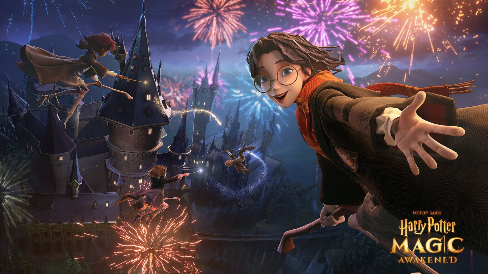

Sus Inicios
Harry Potter
Sinopsis
La historia comienza con la celebración del mundo.los magos habían vivido aterrorizados por el malvado mago. El cuerpo de Voldemort resulta destruido,pero él sobrevive: se convierte en algo más sutil que un fantasma
Novelas
El cuerpo de Voldemort resulta destruido, pero él sobrevive: se convierte en algo más sutil que un fantasma, según sus propias palabras, que no está ni muerto ni vivo. Por su parte, a Harry solo le queda una cicatriz con forma de rayo en la frente que es el único remanente físico de la maldición de Voldemort.
Harry Poter y la Piedra Filosofal
Aparte de la cicatriz, a Harry le queda una extraña conexión cerebral con Voldemort, la cual hace que Harry pueda sentir las emociones de Voldemort y hable parsel, el idioma de las serpientes.
Harry es el único sobreviviente de la maldición asesina
saludos
Personajes
Aparte de la cicatriz, a Harry le queda una extraña conexión cerebral con Voldemort
Harry es el único sobreviviente de la maldición asesina, a raíz de la misteriosa derrota de Voldemort.